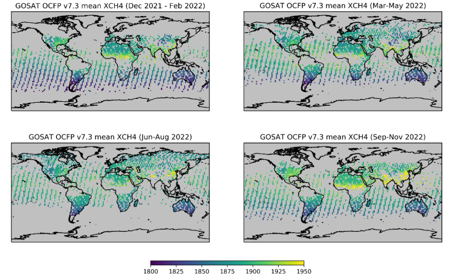
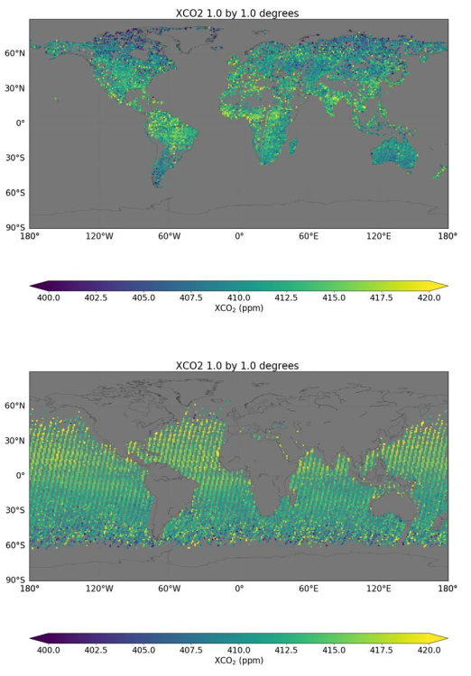

1.2.1. Spatial resolution and completeness of carbon dioxide satellite observations for quantifying carbon fluxes#
Production date: 13-05-2025
Produced by: CNR
🌍 Use case: Using satellite observations for investigating the global carbon fluxes#
❓ Quality assessment question#
Are the XCO\(_2\) satellite observations suitable for deriving carbon fluxes in terms of resolution and spatial completeness?
Carbon dioxide (CO\(_2\)) is the most important anthropogenic greenhouse gas, accounting for almost 64% of the total radiative forcing by long-lived greenhouse gases [1]. The atmospheric concentration of CO\(_2\) in 2023 was 419.3\(\,\pm\,\)0.1 ppm [2].
Accurate spatial and temporal quantification of carbon dioxide (CO\(_2\)) is central to understanding the carbon cycle and supporting policy decisions on climate change mitigation. Satellite retrievals of column-averaged dry air mole fractions of CO\(_2\) (XCO\(_2\)) have been widely used to infer regional and global variations in carbon fluxes through atmospheric inversion modelling (e.g. [3], [4], [5], [6], [7], [8], [9]).
Atmospheric inverse modelling [10] links CO\(_2\) fluxes to observed atmospheric CO\(_2\) mole fractions (like those provided by satellite measurements) using atmospheric transport (and chemistry) models, and is often referred to as “top-down” approach. Due to their large spatial coverage, satellite observations are used for constraining atmospheric inversions by integrating independent datasets provided by high-precision in-situ measurements like those provided by [11].
In this assessment, through a review of existing literature and use cases, we show how column-averaged mixing ratios of CO\(_2\) (XCO\(_2\)) provided by the Level 2 XCO\(_2\) data products of [12] can be used to constrain Earth’s carbon fluxes. As clearly stated in the Documentation [13], these data products can be used in combination with appropriate modelling, like atmospheric inversion systems, to obtain information on the various natural and anthropogenic surface sources and sinks of CO\(_2\).

The figure shows the global carbon budget estimated by the Global ObservatioN-based system for monitoring Greenhouse GAses (GONGGA) atmospheric inversion system through assimilation of Orbiting Carbon Observatory-2 (OCO-2) XCO\(_2\) data and the global atmospheric growth rate by [11]. \(E_{\mathrm{FOS}}\) denotes fossil fuel CO\(_2\) emissions, \(E_{\mathrm{FIRE}}\) denotes biomass combustion emissions, \(F_{\mathrm{OCEAN}}\) denotes ocean-atmosphere carbon fluxes, NEE denotes net ecosystem exchange (i.e. the balance of photosynthesis and respiration from the terrestrial ecosystem) and \(G_{\mathrm{ATM}}\)denotes the growth rate of atmospheric CO\(_2\) concentration derived from GONGGA and [11]. Image reproduced from [8] under CC-BY licence.
📢 Quality assessment statement#
These are the key outcomes of this assessment
The XCO\(_2\) satellite observations (Level 2) must be used within inversion modelling systems to derive accurate carbon fluxes.
The spatial coverage and resolution (spatial density) of the XCO\(_2\) data or a combination of them, affected the impact of satellite observations on carbon flux quantifications in different regions.
In regions characterised by low spatial data completeness, the estimated surface fluxes are more influenced by the a priori information.
Since this dataset is updated on a yearly basis, users interested in near real time applications should consider other Copernicus resources (e.g., [7]).
📋 Methodology#
To show that the spatial coverage and resolution of satellite-based observations characteriizing the Climate Data Store dataset “Carbon dioxide data from 2002 to present derived from satellite observations” [12] are suitable to investigate Earth’s Carbon fluxes by their usage in atmospheric modelling system, we inspected the related Documentation ([13]) as well as case studies available from scientific literature ([5], [6]).
In particular, [5] evaluated an ensemble of six multi-year global Bayesian CO\(_2\) atmospheric inversions by using a large dataset of accurate aircraft measurements in the free troposphere over the globe. For the inversion experiments they also considered a previous version of a data product available by the Climate Data Store (CO2_GOS_OCFP, v7.1).
[6] compared the results of constraining the terrestrial ecosystem carbon fluxes by assimilating GOSAT and OCO-2 XCO\(_2\) retrievals (both produced by the “NASA Atmospheric CO\(_2\) Observations from Space” project, version b7.3) within the GEOS-Chem 4D-Var assimilation framework.
[3], [7] and [9] provide cases about the use of CO\(_2\) satellite observations to estimate net CO\(_2\) fluxes into the atmosphere at global scale and over speficic land and oceans regions by using inversion systems. [3] and [7] used previous versions of the XCO\(_2\) GOSAT data products (“CO2_GOS_OCFP”, “CO2_GOS_SRFP”) available by the Climate Data Store dataset “Carbon dioxide data from 2002 to present derived from satellite observations” [12]
📈 Analysis and results#
1. Spatial resolution assessment#
As documented by [5] and [6], OCO-2 observations provide spatially dense data with a narrow swath (10.3 km) and with footprints of a few square kilometres (1.29 km × 2.25 km). The Documentation ([13], [14], [15]) related to the dataset “Carbon dioxide data from 2002 to present derived from satellite observations” [9] was inspected. Level 2 data product based on GOSAT and GOSAT-2 measurements (CO2_GOS_SRFP v2.3.8, CO2_GOS_OCFP v7.3, CO2_GO2_SRFP v2.1.0) are characterised by a 9.7 km (diameter) footprint with the single observations typically on the order of 100 km apart with a 6-day repeat cycle. According to [5], the lower data density of GOSAT observations with respect to OCO-2 may potentially affect the quantification of carbon fluxes but no conclusive statements were made on this topic: as also demonstrated by the a number ofg available case studies (e.g., [3], [7], [9]), this does not prevent the use of GOSAT observations within atmospheric inversion systems.
2. Spatial coverage assessment#
As documented by [5] and [6], both OCO-2 and GOSAT observations are not evenly distributed spatially. Due to cloud contamination, there are few retrievals in a large portion of tropical land. Moreover, available satellite retrievals are very sparse in the northern high-latitude area, especially in boreal regions, due to the occurrence of low solar zenith angles.
The Documentation on “Carbon dioxide data from 2002 to present derived from satellite observations” ([13], [14], [15]) was examined. With respect to spatial coverage: GOSAT data products (CO2_GOS_SRFP v2.3.8, CO2_GOS_OCFP v7.3, CO2_GO2_SRFP v2.1.0) are characterised by low data coverage at high latitudes (due to unfavourable illumination conditions) and over the tropics (due to frequent cloud contamination). Users should be aware that the impact of satellite XCO\(_2\) data on the carbon fluxes diagnosed by the inversion system may be related to the spatial coverage and the amount of data of the XCO\(_2\) datasets (see [6]): in general, in regions characterised by low data coverage, the carbon fluxes diagnosed by the inversion system are dominated by the information provided by the a-priori field.

Figure showing global seasonal maps of GOSAT XCO2 “CO2_GOS_OCFP” retrieved between December 2021 and November 2022. XCO\(_2\) values are expresssed as parts per million (ppm). Image adapted from [14] under CC-BY license.

Figure showing global XCO\(_2\) map of GOSAT XCO2 “CO2_GO2_SRFP” for the 2019-2022 period on a 1° X 1° resolution for both land (top) and ocean (bottom) retrivials. XCO\(_2\) values are expresssed as parts per million (ppm). Image adapted from [15] under CC-BY license.
Note
For use with an inverse modelling system to obtain information on CO\(_2\) surface fluxes, interested users may also consider the Level 2 merged multi-sensor XCO2_EMMA data product ([16]) that optimises the spatial and the temporal data coverage by merging XCO\(_2\) data from different sensors and algorithms. The XCO2_EMMA data product consists of individual Level 2 soundings retrieved by algorithms that may vary from gridbox to gridbox and from month to month. As recommended by [17], it is important to note that these merged products are not necessarily the most optimal products for all applications, as they do not include all data from a given satellite sensor.
Note
Please note that this assessment was not produced to rank the distinctive performance of the OCO-2 and GOSAT datasets in atmospheric inversion systems. Differences in the results of inversion experiments can be related to different factors, some of which are related to the satellite observations used (such as their data coverage, data precision, data accuracy including the implemented bias correction), while others can be related to other components of the inversion system (e.g. the transport model used, the a-priori field, the inversion method used).
ℹ️ If you want to know more#
Key resources#
The CDS catalogue entries for the data used were:
Carbon dioxide data from 2002 to present derived from satellite observations: https://cds.climate.copernicus.eu/datasets/satellite-carbon-dioxide?tab=overview
Users interested in accessing CO\(_2\) fluxes from inversion systems can consider to use specifically designed Copernicus resources like CAMS global inversion-optimised greenhouse gas fluxes and concentrations.
References#
[1] World Meteorological Organization. (2023). WMO Greenhouse Gas Bulletin, 19, ISSN 2078-0796.
[2] Friedlingstein, P., O’Sullivan, M., Jones, M. W., Andrew, R. M., Hauck, J., Landschützer, P., Le Quéré, C., Li, H., Luijkx, I. T., Olsen, A., Peters, G. P., Peters, W., Pongratz, J., Schwingshackl, C., Sitch, S., Canadell, J. G., Ciais, P., Jackson, R. B., Alin, S. R., Arneth, A., Arora, V., Bates, N. R., Becker, M., Bellouin, N., Berghoff, C. F., Bittig, H. C., Bopp, L., Cadule, P., Campbell, K., Chamberlain, M. A., Chandra, N., Chevallier, F., Chini, L. P., Colligan, T., Decayeux, J., Djeutchouang, L. M., Dou, X., Duran Rojas, C., Enyo, K., Evans, W., Fay, A. R., Feely, R. A., Ford, D. J., Foster, A., Gasser, T., Gehlen, M., Gkritzalis, T., Grassi, G., Gregor, L., Gruber, N., Gürses, Ö., Harris, I., Hefner, M., Heinke, J., Hurtt, G. C., Iida, Y., Ilyina, T., Jacobson, A. R., Jain, A. K., Jarníková, T., Jersild, A., Jiang, F., Jin, Z., Kato, E., Keeling, R. F., Klein Goldewijk, K., Knauer, J., Korsbakken, J. I., Lan, X., Lauvset, S. K., Lefèvre, N., Liu, Z., Liu, J., Ma, L., Maksyutov, S., Marland, G., Mayot, N., McGuire, P. C., Metzl, N., Monacci, N. M., Morgan, E. J., Nakaoka, S.-I., Neill, C., Niwa, Y., Nützel, T., Olivier, L., Ono, T., Palmer, P. I., Pierrot, D., Qin, Z., Resplandy, L., Roobaert, A., Rosan, T. M., Rödenbeck, C., Schwinger, J., Smallman, T. L., Smith, S. M., Sospedra-Alfonso, R., Steinhoff, T., Sun, Q., Sutton, A. J., Séférian, R., Takao, S., Tatebe, H., Tian, H., Tilbrook, B., Torres, O., Tourigny, E., Tsujino, H., Tubiello, F., van der Werf, G., Wanninkhof, R., Wang, X., Yang, D., Yang, X., Yu, Z., Yuan, W., Yue, X., Zaehle, S., Zeng, N., and Zeng, J. (2025). Global Carbon Budget 2024, Earth System Science Data, 17, 965-1039. https://doi.org/10.5194/essd-17-965-2025.
[3] Reuter, M., Buchwitz, M., Hilker, M., Heymann, J., Schneising, O., Pillai, D., Bovensmann, H., Burrows, J. P., Bösch, H., Parker, R., Butz, A., Hasekamp, O., O’Dell, C. W., Yoshida, Y., Gerbig, C., Nehrkorn, T., Deutscher, N. M., Warneke, T., Notholt, J., Hase, F., Kivi, R., Sussmann, R., Machida, T., Matsueda, H., and Sawa, Y. (2013). Satellite-inferred European carbon sink larger than expected. Atmospheric Chemistry and Physics, 14, 13739–13753. https://doi.org/10.5194/acp-14-13739-2014.
[4] Reuter, M., and Coauthors. (2017). How much CO\(_2\) is taken up by the European terrestrial biosphere?. Bullettin of American Meteorology Society, 98, 665–671. https://doi.org/10.1175/BAMS-D-15-00310.1.
[5] Chevallier, F., Remaud, M., O’Dell, C. W., Baker, D., Peylin, P., and Cozic, A. (2019). Objective evaluation of surface- and satellite-driven carbon dioxide atmospheric inversions. Atmospheric Chemistry and Physics, 19, 14233–14251. https://doi.org/10.5194/acp-19-14233-2019.
[6] Wang, H., Jiang, F., Wang, J., Ju, W., and Chen, J. M. (2019). Terrestrial ecosystem carbon flux estimated using GOSAT and OCO-2 XCO2 retrievals. Atmospheric Chemistry and Physics, 19, 12067–12082. https://doi.org/10.5194/acp-19-12067-2019.
[7] Maasakkers, J. D., Jacob, D. J., Sulprizio, M. P., Scarpelli, T. R., Nesser, H., Sheng, J., Zhang, Y., Lu, X., Bloom, A. A., Bowman, K. W., Worden, J. R., and Parker, R. J. (2021). 2010–2015 North American methane emissions, sectoral contributions, and trends: a high-resolution inversion of GOSAT observations of atmospheric methane. Atmospheric Chemistry and Physics, 21, 4339–4356. https://doi.org/10.5194/acp-21-4339-2021
[8] Jin, Z., Tian, X., Wang, Y., Zhang, H., Zhao, M., Wang, T., Ding, J., and Piao, S. (2024). A global surface CO\(_2\) flux dataset (2015–2022) inferred from OCO-2 retrievals using the GONGGA inversion system. Earth System Science Data, 16, 2857–2876. https://doi.org/10.5194/essd-16-2857-2024.
[9] Copernicus Climate Change Service (C3S). (2024). European State of the Climate 2023, Web site.
[10] Peylin, P., Law, R. M., Gurney, K. R., Chevallier, F., Jacobson, A. R., Maki, T., Niwa, Y., Patra, P. K., Peters, W., Rayner, P. J., Rödenbeck, C., van der Laan-Luijkx, I. T., and Zhang, X. (2013). Global atmospheric carbon budget: results from an ensemble of atmospheric CO\(_2\) inversions. Biogeosciences, 10, 6699–6720. https://doi.org/10.5194/bg-10-6699-2013.
[11] Lan, X., Tans, P. and K.W., Thoning. Trends in globally-averaged CO\(_2\) determined from NOAA Global Monitoring Laboratory measurements. Version: Monday, 05-May-2025 16:38:58 MDT. https://doi.org/10.15138/9N0H-ZH07
[12] Copernicus Climate Change Service, Climate Data Store, (2018). Carbon dioxide data from 2002 to present derived from satellite observations. Copernicus Climate Change Service (C3S) Climate Data Store (CDS). https://doi.org/10.24381/cds.f74805c8 (Accessed on 13-May-2025)
[13] Buchwitz, M. (2024). Product User Guide and Specification (PUGS) – Main document for Greenhouse Gas (GHG: CO\(_2\) & CH\(_4\)) data set CDR7 (01.2003-12.2022), C3S project 2021/C3S2_312a_Lot2_DLR/SC1, v7.3.
[14] Boesch, A.,and Di Noia, A. (2024). Product User Guide and Specification (PUGS) – ANNEX A for products CO2_GOS_OCFP, CH4_GOS_OCFP (v7.3, 2009-2021) & CH4_GOS_OCPR (v9.0, 2009- 2021), C3S2_312a_Lot2_DLR – Atmosphere.
[15] Barr A., and Borsdorff, T. (2024). Product User Guide and Specification (PUGS) – ANNEX B for products CO2_GO2_SRFP, CH4_GO2_SRFP (v2.0.0, 2019-2022), C3S2_312a_Lot2_DLR – Atmosphere.
[16] Buchwitz, M. (2024). Product User Guide and Specification (PUGS) – Main document for Greenhouse Gas (GHG: CO\(_2\) & CH\(_4\)) data set CDR7 (01.2003-12.2022), C3S project 2021/C3S2_312a_Lot2_DLR/SC1, v7.3.
[17] Reuter, M., Buchwitz, M., Schneising, O., Noël, S., Bovensmann, H., Burrows, J. P., Boesch, H., Di Noia, A., Anand, J., Parker, R. J., Somkuti, P., Wu, L., Hasekamp, O. P., Aben, I., Kuze, A., Suto, H., Shiomi, K., Yoshida, Y., Morino, I., Crisp, D., O’Dell, C. W., Notholt, J., Petri, C., Warneke, T., Velazco, V. A., Deutscher, N. M., Griffith, D. W. T., Kivi, R., Pollard, D. F., Hase, F., Sussmann, R., Té, Y. V., Strong, K., Roche, S., Sha, M. K., De Mazière, M., Feist, D. G., Iraci, L. T., Roehl, C. M., Retscher, C., and Schepers, D. (2020). Ensemble-based satellite-derived carbon dioxide and methane column-averaged dry-air mole fraction data sets (2003–2018) for carbon and climate applications. Atmospheric Chemistry and Physics, 13, 789–819. https://doi.org/10.5194/amt-13-789-2020, 2020.